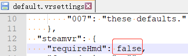
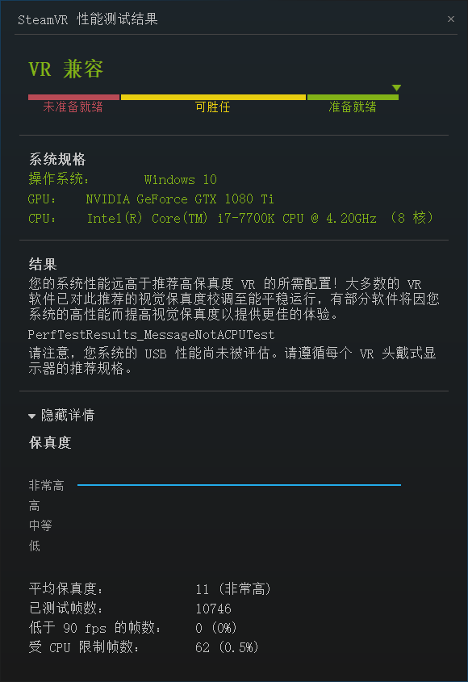
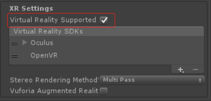
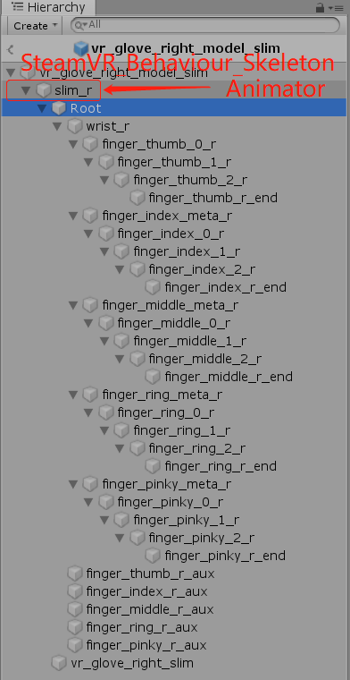
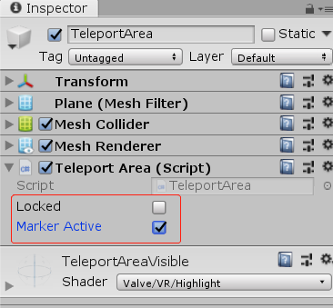
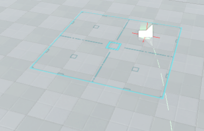
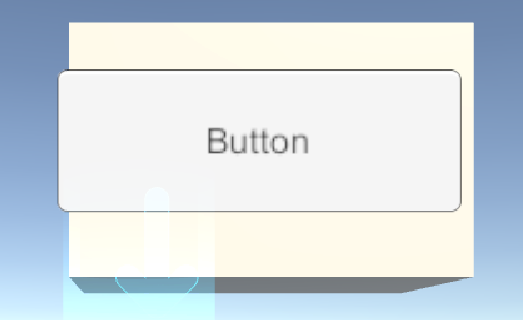
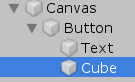
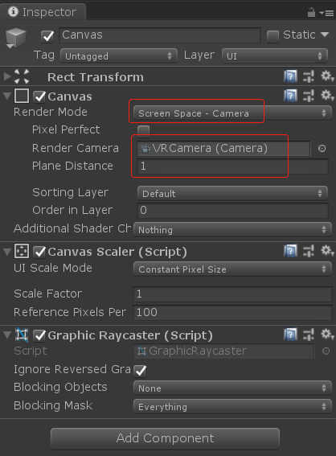
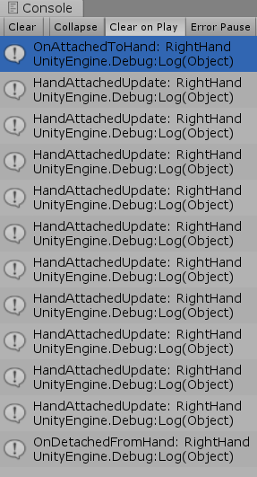

SteamVR Plugin 2.x.x概述
作者：追风剑情 发布于：2019-3-25 19:53 分类：Unity3d
安装Steam https://store.steampowered.com/about/
登录Steam
SteamVR的配置文件:
{SteamVR安装目录}\steamapps\common\SteamVR\resources\settings\default.vrsettings
在配置文件中将头显设备设置成可选项: 可在不接入头显的情况下仅使用定位器功能

安装SteamVR Performance Test来评估电脑配置
评估您当前的系统是否达到运行 VR 的水平标准；若未达标准，判断性能限制来自于显卡、处理器或两者皆有。
https://store.steampowered.com/app/323910/SteamVR_Performance_Test/


Virtual Reality Supported可以控制SteamVR插件功能的开启或关闭，当我们导入了SteamVR Unity Plugin时，但又不想启动VR，可以去掉这个勾选项。
Stereo Rendering Mode(立体渲染模式)
Multi-Pass Stereo Rendering(多通道立体渲染)
Single-Pass Stereo Rendering(单通道立体渲染)
Single-Pass Instanced(单通道立体实例化)，进一步提升Single-Pass性能的技术。
多通道立体渲染性能要低于单通道立体渲染
关闭自动开启Virtual Reality Supported选项
新版本这个选项移到了这里
MainCamera的y坐标会增加此高度值。为了保证这里的高度值与实际高度相稳合，请在运行游戏前，将MainCamera的y坐标设置成0
SteamVR Unity Plugin文档
https://valvesoftware.github.io/steamvr_unity_plugin/
在 Unity Asset Store 下载 SteamVR Plugin
手模型结构
(Root下面对应五根手指及手指关节)
事件配置
Window->SteamVR Input
点击【Open binding UI】可以编辑Action
通过挂载SteamVR_ActivateActionSetOnLoad脚本，激活动作集。
一、将Player拖入场景，并删除默认的Main Camera，此时可在VR中看见手柄。
二、将Teleporting拖入场景，然后按住触摸板，即可看见从手柄发出的射线。
只需向场景中摆放TeleportPoint即可增加传送点。
Teleport的Start()方法中会获取所有传送点，并隐藏。
在传送点(teleport_marker_mesh)上挂个IgnoreTeleportTrace脚本可忽略射线碰撞。
传送区域
将TeleportArea脚本挂到Panel上可制作传送区域
Locked: true表示不可传送,但可显示。
Marker Active: true(可显示)，false(不可显示)。

二、制作HUD，参考[Status].prefab
利用一个独立的Camera渲染所有的UI元素到一张RenderTexture上,再把这张RenderTexture赋给SteamVR_Overlay的texture属性。
三、跟踪设备姿态(位置、旋转)
这两个类都可实现对设备的姿态跟踪SteamVR_TrackedObject、SteamVR_Behaviour_Pose，将任一一个脚本挂到GameObject上，此GameObject的位置与旋转将与设备同步。
手指枚举
public enum SteamVR_Skeleton_FingerIndexEnum
{
thumb, //拇指
index, //食指
middle, //中指
ring, //无名指
pinky, //小指
}
示例：当GameObject挂上以下脚本，便可处理相应的Action
using System.Collections;
using System.Collections.Generic;
using UnityEngine;
using Valve.VR;
[RequireComponent(typeof(SteamVR_TrackedObject))]
public class TestThrow : MonoBehaviour
{
//获取输入Action: InteractUI
//可通过SteamVR Input窗口查看和编辑所有Action
public SteamVR_Action_Boolean spawn = SteamVR_Input.GetAction<SteamVR_Action_Boolean>("InteractUI");
//SteamVR_Behaviour_Pose负责跟踪设备行为
SteamVR_Behaviour_Pose trackedObj;
private void Awake()
{
trackedObj = GetComponent<SteamVR_Behaviour_Pose>();
}
private void FixedUpdate()
{
//按下
if (spawn.GetStateDown(trackedObj.inputSource))
{
}
//释放
else if (spawn.GetStateUp(trackedObj.inputSource))
{
}
}
}
示例：用扳机键与物体交互
using System.Collections;
using System.Collections.Generic;
using UnityEngine;
using Valve.VR;
using Valve.VR.InteractionSystem;
/// <summary>
/// 示例: 用扳机键与物体交互
/// </summary>
public class CubeInteraction : MonoBehaviour
{
// 当手柄刚接触到物体时触发
private void OnHandHoverBegin(Hand hand)
{
Debug.Log("***** OnHandHoverBegin");
}
// 当手柄持续停留在物体上时触发
private void HandHoverUpdate(Hand hand)
{
// 判断扳机键是否按下
string actionSetName = "default"; //默认动作集
string actionName = "GrabPinch"; //扳机键动作
SteamVR_Action_Boolean GrabPinch = SteamVR_Input.GetAction<SteamVR_Action_Boolean>(actionSetName, actionName, true);
if (GrabPinch != null)
{
if (GrabPinch.GetStateDown(SteamVR_Input_Sources.Any))
{
//仅按下扳机键时触发一次
Debug.Log("***** GetStateDown");
}
else if (GrabPinch.GetStateUp(SteamVR_Input_Sources.Any))
{
//仅释放扳机键时触发一次
Debug.Log("***** GetStateUp");
}
else if (GrabPinch.GetState(SteamVR_Input_Sources.Any))
{
//按住扳机键不放，会持续触发
Debug.Log("***** GetState");
}
}
}
// 当手柄离开物体时触发
private void OnHandHoverEnd(Hand hand)
{
Debug.Log("***** OnHandHoverEnd");
}
}
示例：与UI元素交互

将下面的脚本挂在Button上
using System.Collections;
using System.Collections.Generic;
using UnityEngine;
using Valve.VR;
using Valve.VR.InteractionSystem;
/// <summary>
/// 示例：与UI元素交互
/// UI元素下面要放一个3D物体(如，Cube)，否则不会触发回调事件。
/// </summary>
public class ButtonInteraction : UIElement
{
protected override void OnButtonClick()
{
base.OnButtonClick();
Debug.Log("***** #OnButtonClick()");
}
protected override void OnHandHoverBegin(Hand hand)
{
base.OnHandHoverBegin(hand);
Debug.Log("***** #OnHandHoverBegin()");
}
protected override void OnHandHoverEnd(Hand hand)
{
base.OnHandHoverEnd(hand);
Debug.Log("***** #OnHandHoverEnd()");
}
protected override void HandHoverUpdate(Hand hand)
{
base.HandHoverUpdate(hand);
//Debug.Log("***** #HandHoverUpdate()");
}
}
运行测试
要使UGUI的Button与VR手柄交互，需要挂上BoxCllider、Interactable、继承自UIElement的脚本。

VRInteractableButton.cs是继承UIElement的脚本
using System.Collections;
using System.Collections.Generic;
using UnityEngine;
using Valve.VR;
using Valve.VR.InteractionSystem;
/// <summary>
/// 挂在UI Button对象上
/// </summary>
public class VRInteractableButton : UIElement
{
protected override void OnButtonClick()
{
base.OnButtonClick();
}
protected override void OnHandHoverBegin(Hand hand)
{
base.OnHandHoverBegin(hand);
}
protected override void OnHandHoverEnd(Hand hand)
{
base.OnHandHoverEnd(hand);
}
protected override void HandHoverUpdate(Hand hand)
{
base.HandHoverUpdate(hand);
}
}
Canvas设置

Render Mode设置为Screen Space-Camera
Render Camera设置成VRCamera，需要删除场景中原来的Main Camera
Plane Distance: Canvas距离VRCamera的距离(即，调整UI画面离眼睛的距离)
示例：抓取
using System.Collections;
using System.Collections.Generic;
using UnityEngine;
using Valve.VR;
using Valve.VR.InteractionSystem;
/// <summary>
/// 将此脚本挂在需要被抓取的物体上
/// </summary>
[RequireComponent(typeof(Interactable))]
public class GrabInteraction : MonoBehaviour
{
private Vector3 oldPosition;
private Quaternion oldRotation;
private Hand.AttachmentFlags attachmentFlags = Hand.defaultAttachmentFlags & (~Hand.AttachmentFlags.SnapOnAttach) & (~Hand.AttachmentFlags.DetachOthers) & (~Hand.AttachmentFlags.VelocityMovement);
private Interactable interactable;
private void Awake()
{
interactable = this.GetComponent<Interactable>();
}
private void HandHoverUpdate(Hand hand)
{
GrabTypes startingGrabType = hand.GetGrabStarting();
bool isGrabEnding = hand.IsGrabEnding(this.gameObject);
if (interactable.attachedToHand == null && startingGrabType != GrabTypes.None)
{
// 保存原来位置/旋转，以便当抓取释放后重置
oldPosition = transform.position;
oldRotation = transform.rotation;
// 禁止执行hand.UpdateHovering()
hand.HoverLock(interactable);
// 将gameObject关联到手上
hand.AttachObject(gameObject, startingGrabType, attachmentFlags);
}
else if (isGrabEnding)
{
// 断开gameObject与手的联连
hand.DetachObject(gameObject);
// 允许执行hand.UpdateHovering()
hand.HoverUnlock(interactable);
// 重置坐标/旋转
transform.position = oldPosition;
transform.rotation = oldRotation;
}
}
// 当物体被抓住时触发
private void OnAttachedToHand(Hand hand)
{
Debug.Log(string.Format("OnAttachedToHand: {0}", hand.name));
}
// 当物体与抓取它的手断开时触发
private void OnDetachedFromHand(Hand hand)
{
Debug.Log(string.Format("OnDetachedFromHand: {0}", hand.name));
}
// 当物体被一直抓住时，会持续触发
private void HandAttachedUpdate(Hand hand)
{
Debug.Log(string.Format("HandAttachedUpdate: {0}", hand.name));
}
}
运行测试

示例：扔物体
using System.Collections;
using System.Collections.Generic;
using UnityEngine;
using Valve.VR;
using Valve.VR.InteractionSystem;
/// <summary>
/// 示例：扔物体
/// </summary>
[RequireComponent(typeof(Interactable))]
public class ThrowInteraction : MonoBehaviour
{
public SteamVR_Behaviour_Pose pose;
private new Rigidbody rigidbody;
private Hand.AttachmentFlags attachmentFlags = Hand.defaultAttachmentFlags
& (~Hand.AttachmentFlags.SnapOnAttach)
& (~Hand.AttachmentFlags.DetachOthers)
& (~Hand.AttachmentFlags.VelocityMovement)
| Hand.AttachmentFlags.TurnOffGravity;
private void Awake()
{
pose = Player.instance.rightHand.GetComponent<SteamVR_Behaviour_Pose>();
rigidbody = GetComponent<Rigidbody>();
rigidbody.useGravity = false;
}
void FixedUpdate()
{
// 判断扳机键是否按下
string actionSetName = "default"; //默认动作集
string actionName = "GrabPinch"; //扳机键动作
SteamVR_Action_Boolean GrabPinch = SteamVR_Input.GetAction<SteamVR_Action_Boolean>(actionSetName, actionName, true);
if (GrabPinch != null)
{
if (GrabPinch.GetStateDown(SteamVR_Input_Sources.RightHand))
{
//按下扳机键时抓住物体
Player.instance.rightHand.AttachObject(gameObject, GrabTypes.Pinch, attachmentFlags);
}
else if (GrabPinch.GetStateUp(SteamVR_Input_Sources.RightHand))
{
//释放扳机键时扔出物体
Player.instance.rightHand.DetachObject(gameObject);
rigidbody.velocity = pose.GetVelocity() * 2;
rigidbody.angularVelocity = pose.GetAngularVelocity();
rigidbody.maxAngularVelocity = rigidbody.angularVelocity.magnitude;
rigidbody.useGravity = true;
}
else if (GrabPinch.GetState(SteamVR_Input_Sources.RightHand))
{
//按住扳机键不放，会持续触发
//Debug.Log("***** GetState");
}
}
}
}
运行测试
//让画面在5秒内逐渐变黑
SteamVR_Fade.Start(Color.black, 5);
//让画面在5秒内逐渐变亮
SteamVR_Fade.Start(new Color(0, 0, 0, 0), 5);
//手柄震动：SteamVR_Actions.default_Haptic.Execute(开始时间，持续时间，频率，振幅，SteamVR_Input_Sources.哪个手柄)
SteamVR_Actions.default_Haptic.Execute(0, 0.2f, 1, 10, SteamVR_Input_Sources.RightHand);
获取手指关节坐标及旋转
//获取右手骨骼对象
SteamVR_Behaviour_Skeleton rightSkeleton = Player.instance.rightHand.skeleton;
//获取右手拇指中间关节的本地坐标(第二个参数true)
steamVR_Behaviour_Skeleton.GetBonePosition(SteamVR_Skeleton_JointIndexes.thumbMiddle, true)
//获取右手拇指中间关节的本地旋转(第二个参数true)
steamVR_Behaviour_Skeleton.GetBoneRotation(SteamVR_Skeleton_JointIndexes.thumbMiddle, true)
更多参考
SteamVR 出现的问题和解决办法
OpenVR API Documentation
XR技术词汇速查表
Interaction System
插件使用指南
VR手套官网(Noitom Hi5)
VR手套SDK下载(Noitom Hi5)
日历
最新文章
随机文章
热门文章
分类

存档
- 2022年2月(2)
- 2022年1月(8)
- 2021年12月(5)
- 2021年11月(3)
- 2021年10月(4)
- 2021年9月(9)
- 2021年8月(14)
- 2021年7月(8)
- 2021年6月(5)
- 2021年5月(2)
- 2021年4月(3)
- 2021年3月(7)
- 2021年2月(2)
- 2021年1月(8)
- 2020年12月(7)
- 2020年11月(2)
- 2020年10月(6)
- 2020年9月(9)
- 2020年8月(10)
- 2020年7月(9)
- 2020年6月(18)
- 2020年5月(4)
- 2020年4月(25)
- 2020年3月(38)
- 2020年1月(21)
- 2019年12月(13)
- 2019年11月(29)
- 2019年10月(44)
- 2019年9月(17)
- 2019年8月(18)
- 2019年7月(25)
- 2019年6月(25)
- 2019年5月(17)
- 2019年4月(10)
- 2019年3月(36)
- 2019年2月(35)
- 2019年1月(28)
- 2018年12月(30)
- 2018年11月(22)
- 2018年10月(4)
- 2018年9月(7)
- 2018年8月(13)
- 2018年7月(13)
- 2018年6月(6)
- 2018年5月(5)
- 2018年4月(13)
- 2018年3月(5)
- 2018年2月(3)
- 2018年1月(8)
- 2017年12月(35)
- 2017年11月(17)
- 2017年10月(16)
- 2017年9月(17)
- 2017年8月(20)
- 2017年7月(34)
- 2017年6月(17)
- 2017年5月(15)
- 2017年4月(32)
- 2017年3月(8)
- 2017年2月(2)
- 2017年1月(5)
- 2016年12月(14)
- 2016年11月(26)
- 2016年10月(12)
- 2016年9月(25)
- 2016年8月(32)
- 2016年7月(14)
- 2016年6月(21)
- 2016年5月(17)
- 2016年4月(13)
- 2016年3月(8)
- 2016年2月(8)
- 2016年1月(18)
- 2015年12月(13)
- 2015年11月(15)
- 2015年10月(12)
- 2015年9月(18)
- 2015年8月(21)
- 2015年7月(35)
- 2015年6月(13)
- 2015年5月(9)
- 2015年4月(4)
- 2015年3月(5)
- 2015年2月(4)
- 2015年1月(13)
- 2014年12月(7)
- 2014年11月(5)
- 2014年10月(4)
- 2014年9月(8)
- 2014年8月(16)
- 2014年7月(26)
- 2014年6月(22)
- 2014年5月(28)
- 2014年4月(15)
友情链接
- Unity官网
- Unity圣典
- Unity在线手册
- Unity中文手册(圣典)
- Unity官方中文论坛
- Unity游戏蛮牛用户文档
- Unity下载存档
- Unity引擎源码下载
- Unity服务
- Unity Ads
- wiki.unity3d
- Visual Studio Code官网
- SenseAR开发文档
- MSDN
- C# 参考
- C# 编程指南
- .NET Framework类库
- .NET 文档
- .NET 开发
- WPF官方文档
- uLua
- xLua
- SharpZipLib
- Protobuf-net
- Protobuf.js
- OpenSSL
- OPEN CASCADE
- JSON
- MessagePack
- C在线工具
- 9RIA天地会
- 游戏蛮牛
- GreenVPN
- 聚合数据
- 热云
- 融云
- 腾讯云
- 腾讯开放平台
- 腾讯游戏服务
- 腾讯游戏开发者平台
- 腾讯课堂
- 微信开放平台
- 腾讯实时音视频
- 腾讯即时通信IM
- 微信公众平台技术文档
- 白鹭引擎官网
- 白鹭引擎开放平台
- 白鹭引擎开发文档
- FairyGUI编辑器
- PureMVC-TypeScript
- 讯飞开放平台
- 亲加通讯云
- Cygwin
- Mono开发者联盟
- Scut游戏服务器引擎
- KBEngine游戏服务器引擎
- Photon游戏服务器引擎
- 码云
- SharpSvn
- 腾讯bugly
- 4399原创平台
- 开源中国
- Firebase
- Firebase-Admob-Unity
- google-services-unity
- Firebase SDK for Unity
- Google-Firebase-SDK
- AppsFlyer SDK
- android-repository
- CQASO
- Facebook开发者平台
- gradle下载
- GradleBuildTool下载
- Android Developers
- Google中国开发者
- AndroidDevTools
- Android社区
- Android开发工具
- Google Play Games Services
- Google商店
- Google APIs for Android
- 金钱豹VPN
- TouchSense SDK
- MakeHuman
- Online RSA Key Converter
- Windows UWP应用
- Visual Studio For Unity
- E时代IDC主机
- Open CASCADE Technology
- 慕课网
- 奇优广告联盟
- 阿里云服务器ECS
- 在线免费文字转语音系统
- AI Studio
- 网云穿
- 百度网盘开放平台
- 迅捷画图
- 菜鸟工具
- [CSDN] 程序员研修院
- 华为人脸识别
交流QQ群
-
Flash游戏设计: 86184192
Unity游戏设计: 171855449
游戏设计订阅号

捐赠 (用于支付服务器费用)
-
微信

支持宝

捐赠的朋友可与博主成为微信好友，点击下方【给我写信】给博主留言。